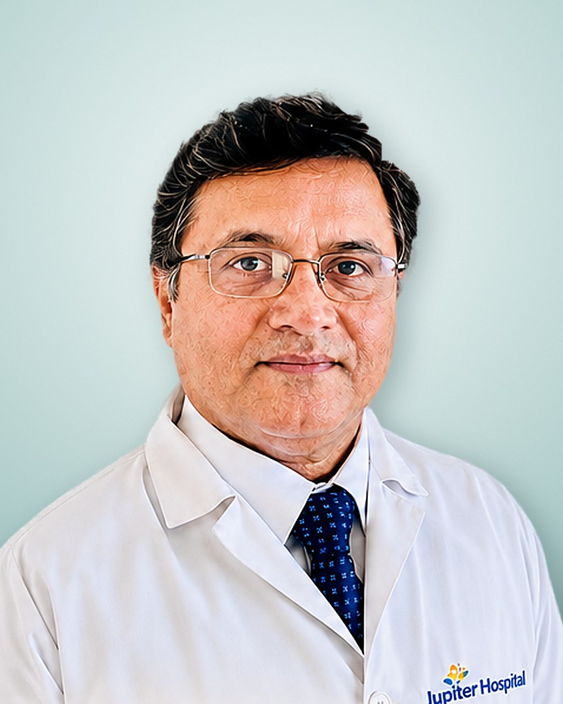
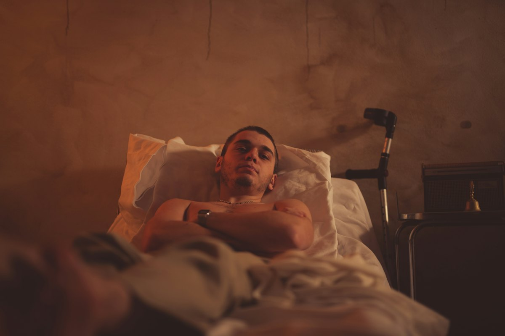
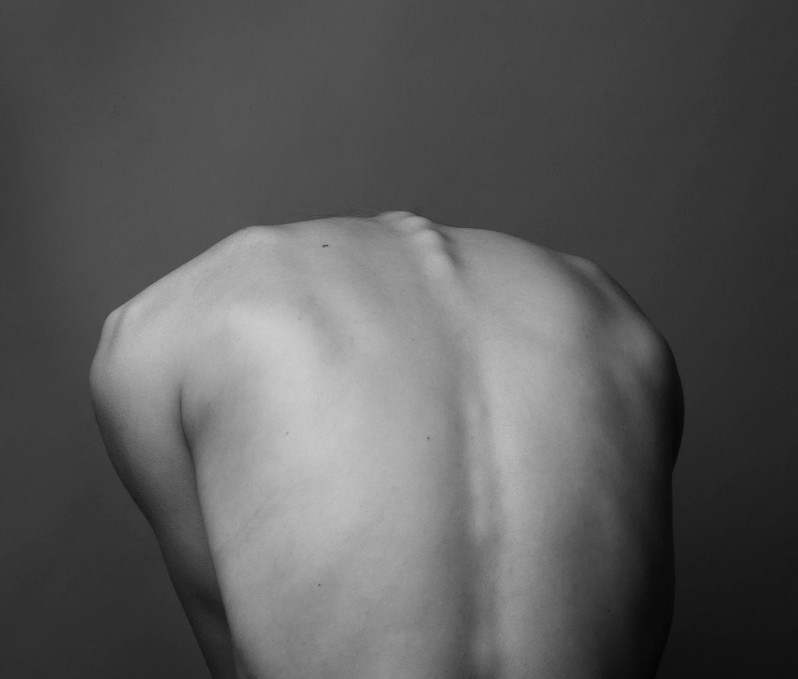

Most common
Most commonSlip Disc
Lumbar disc herniation treated by endoscopic discectomy — the disc fragment removed through a keyhole.
Severe lower back painPain shooting down the legNumbness & tinglingLeg weakness
Dr. Pramod V. Lokhande, a leading expert in full endoscopic spine surgery in India, provides precision-based treatment with faster recovery, minimal pain, and excellent outcomes.

Dr. Pramod Lokhande is a leading spine surgeon in India with over 24 years of exclusive experience in spine surgery, specializing in full endoscopic spine surgery and minimally invasive spine surgery.
A pioneer of full endoscopic interlaminar spine surgery in India, he is internationally recognized as an expert in treating complex spinal conditions such as slip disc (lumbar disc herniation), sciatica, spinal canal stenosis, spondylolisthesis, spinal infections, tumors, and spinal deformities involving the cervical, thoracic, and lumbar spine.
Widely regarded among the best endoscopic spine surgeons in India, having performed 5000+ surgeries to date. Dr. Lokhande is a sought-after faculty at major national and international conferences, where he performs live endoscopic spine surgeries, delivers expert lectures, and conducts cadaver training workshops for orthopedic surgeons and neurosurgeons.
His practice focuses on minimally invasive spine treatment, faster recovery, reduced pain, and precision-driven outcomes.
Through an incision smaller than a fingertip, a high-definition endoscope gives a magnified, crystal-clear view of the nerve — so the problem is treated, and the healthy muscle is left alone.
A single small keyhole incision instead of a long open cut — minimal scarring.
Muscles are gently dilated, not cut or stripped from the spine.
Significantly less post-operative pain and negligible blood loss.
A day-care procedure — most patients walk the same day and go home within 24 hours.
A magnified, clear field of vision through continuous saline irrigation means greater safety.
Back to work and daily activities much earlier than after open spine surgery.
| Full Endoscopic Surgery | Open Spine Surgery | |
|---|---|---|
| Incision | Small keyhole | Long open incision |
| Muscle damage | Minimal | Significant |
| Post-op pain | Low | Moderate to high |
| Hospital stay | Day care · within 24 hours | Several days |
| Walking | Same day | Delayed |
| Complication rate | Significantly lower | Higher |
From a sciatica treatment specialist's everyday cases to complex spinal pathology across the entire spine.
Most commonLumbar disc herniation treated by endoscopic discectomy — the disc fragment removed through a keyhole.
 Leg pain
Leg painRadiating leg pain and numbness from a compressed nerve root, relieved with precision decompression.
 Narrowing
NarrowingEndoscopic decompression to free compressed nerves and restore walking distance.
 Instability
InstabilitySlippage of one vertebra over another, managed with minimally invasive techniques.

InfectionEndoscopic debridement and drainage with minimal disruption to surrounding tissue.
 Growths
GrowthsSelected spinal tumors addressed with precision minimally invasive approaches.

AlignmentExpert evaluation and treatment of deformities of the cervical, thoracic and lumbar spine.
 Neck
NeckNeck and arm pain from cervical disc disease, treated with endoscopic techniques.
Share your MRI report and get an expert opinion from Dr. Lokhande.
Share your MRI →See how a herniated disc is removed through a keyhole incision under high-definition endoscopic vision.
Dr. Lokhande trains orthopedic surgeons and neurosurgeons in full endoscopic spine surgery across India and abroad.
Recognised nationally and internationally for pioneering full endoscopic interlaminar spine surgery in India.
Sought-after faculty and invited speaker at major national and international spine conferences.
Performs live endoscopic spine surgeries broadcast to surgeons at conferences and workshops.
Fellowship-trained in South Korea, Germany, France, Switzerland and Japan, with ongoing global ties.
Hands-on cadaver training workshops for orthopedic surgeons and neurosurgeons, covering interlaminar and transforaminal endoscopic techniques.
Real-time endoscopic spine surgeries performed for audiences at national and international conferences, with step-by-step expert commentary.
Detailed history, examination and review of your MRI.
Conservative care first; surgery only if truly indicated.
Full endoscopic procedure through a keyhole incision.
Most patients walk within hours and go home within 24h.
Early return to work and normal daily activities.
Still unsure whether endoscopic spine surgery is right for you? Ask Dr. Lokhande directly.
Ask a QuestionEndoscopic spine surgery is a minimally invasive technique performed through a small incision using a high-definition camera and specialized instruments. It allows precise treatment of spinal conditions with minimal damage to muscles and faster recovery.
Yes, endoscopic spine surgery is considered safer than open or microscope-assisted surgeries when performed by an experienced spine surgeon. Because of the magnified and clear field of vision, the complication rates are negligible compared to traditional spine surgery. It also offers advantages such as less pain, reduced blood loss, and quicker recovery.
Endoscopic spine surgery can treat conditions such as slip disc (disc herniation), sciatica, spinal canal stenosis, spondylolisthesis, spinal infections and tumors affecting the cervical, thoracic, and lumbar spine.
Recovery after endoscopic spine surgery is much faster than traditional surgery. Many patients can walk the same day and are discharged within 24 hours, so it is a day-care procedure. Return to normal activities is much earlier with full endoscopic spine surgery.
Endoscopic spine surgery offers several advantages over open surgery: smaller incisions, minimal muscle damage, less pain, shorter hospital stay, and faster recovery. The complication rate is also significantly lower because of the magnified and clear field of vision provided by saline irrigation.
Patients with disc herniation, sciatica, or spinal stenosis who have not improved with conservative treatment are often good candidates. A detailed evaluation by a spine specialist is necessary to determine suitability.
The cost of endoscopic spine surgery in India varies depending on the condition, hospital, and complexity of the procedure. It is not very high compared to open surgery, and it is generally more cost-effective than many international centers while maintaining high-quality care.
Consult a spine surgeon in Maharashtra trusted by patients from across India and abroad. Share your symptoms and MRI — our team will get back to you.